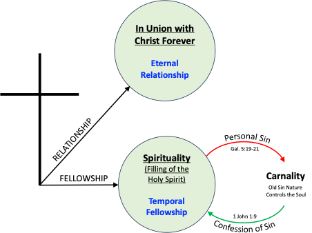
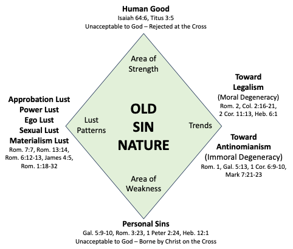

Austin Bible Church
Carnality is the believer in a state of sin where the soul is under the control of the old sin nature. The old sin nature is the source of temptation to sin, but the source of sin is your volition. After salvation, the believer continues to possess their old sin nature and therefore, continues to sin. 1 John 1:8; Rom. 5:12; Rom. 7:14-15.
“If we say that we have no sin, we are deceiving ourselves and the truth is not in us.” (1 John 1:8, NASB)
“Therefore, just as through one man sin entered into the world, and death through sin, and so death spread to all men, because all sinned—” (Romans 5:12, NASB)
“For we know that the Law is spiritual, but I am of flesh, sold into bondage to sin. For what I am doing, I do not understand; for I am not practicing what I would like to do, but I am doing the very thing I hate.” (Romans 7:14-15, NASB)

The old sin nature is deceitful and desperately sick. Jer. 17:9; Psalms 5:2-5.
““The heart is more deceitful than all else And is desperately sick; Who can understand it?” (Jeremiah 17:9, NASB)
“Heed the sound of my cry for help, my King and my God, For to You I pray. In the morning, O LORD, You will hear my voice; In the morning I will order my prayer to You and eagerly watch. For You are not a God who takes pleasure in wickedness; No evil dwells with You. The boastful shall not stand before Your eyes; You hate all who do iniquity.” (Psalms 5:2-5, NASB)
The believer’s soul in carnality is under the control of the old sin nature. Rom. 7:18-20; 1 Cor. 3:1-3; 1 Cor. 5.
“For I know that nothing good dwells in me, that is, in my flesh; for the willing is present in me, but the doing of the good is not. For the good that I want, I do not do, but I practice the very evil that I do not want. But if I am doing the very thing I do not want, I am no longer the one doing it, but sin which dwells in me.” (Romans 7:18-20, NASB)
“And I, brethren, could not speak to you as to spiritual men, but as to men of flesh, as to infants in Christ. I gave you milk to drink, not solid food; for you were not yet able to receive it. Indeed, even now you are not yet able, for you are still fleshly. For since there is jealousy and strife among you, are you not fleshly, and are you not walking like mere men?” (1 Corinthians 3:1-3, NASB)
The old sin nature frustrates bona fide production in the life of the believer. Rom. 7:5.
“For while we were in the flesh, the sinful passions, which were aroused by the Law, were at work in the members of our body to bear fruit for death.” (Romans 7:5, NASB)
The old sin nature is acquired genetically from the father’s chromosomes. Psalms 51:5; Rom. 5:12.
“Therefore, just as through one man sin entered into the world, and death through sin, and so death spread to all men, because all sinned—” (Romans 5:12, NASB)
“Behold, I was brought forth in iniquity, And in sin my mother conceived me.” (Psalms 51:5, NASB)
There are four main characteristics that make up the old sin nation. The Area of Weakness produces sins. The Area of Strength produces human good. The Lust Patterns produce various types of lusts and the Trends produce Legalism / Asceticism and Antinomianism / Lasciviousness.

Our resurrected body will be exactly like that of the resurrected humanity of Jesus Christ and will not have an old sin nature. 1 John 3:1-2; Phil. 3:20-21.
“See how great a love the Father has bestowed on us, that we would be called children of God; and such we are. For this reason the world does not know us, because it did not know Him. Beloved, now we are children of God, and it has not appeared as yet what we will be. We know that when He appears, we will be like Him, because we will see Him just as He is.” (1 John 3:1-2, NASB)
“For our citizenship is in heaven, from which also we eagerly wait for a Savior, the Lord Jesus Christ; who will transform the body of our humble state into conformity with the body of His glory, by the exertion of the power that He has even to subject all things to Himself.” (Philippians 3:20-21, NASB)
The best that the old sin nature can produce is human good works that God’s absolute righteousness considers “like a filthy garment” and completely unacceptable. Isaiah 64:6.
“For all of us have become like one who is unclean, And all our righteous deeds are like a filthy garment; And all of us wither like a leaf, And our iniquities, like the wind, take us away.” (Isaiah 64:6, NASB)
The old sin nature has many facets. We are not to let our sin nature control our soul, but to overcome it through confession of sin to God the Father resulting in the filling of the Holy Spirit where the Holy Spirit then controls our soul. Rom. 6:12-14; Col. 2:11.
“Therefore do not let sin reign in your mortal body so that you obey its lusts, and do not go on presenting the members of your body to sin as instruments of unrighteousness; but present yourselves to God as those alive from the dead, and your members as instruments of righteousness to God. For sin shall not be master over you, for you are not under law but under grace.” (Romans 6:12-14, NASB)
“and in Him you were also circumcised with a circumcision made without hands, in the removal of the body of the flesh by the circumcision of Christ;” (Colossians 2:11, NASB)
The Carnal Christian
In 1 Corinthians, there are at least 63 different sins mentioned. The Corinthians were Sin, Inc., but they were believers. More spoke in tongues, did miracles, and manifested other supernatural sign gifts than any other church in the New Testament, but they were the worst group pictured in any New Testament local church. 1 Cor. 3:1.
"And I, brethren, could not speak to you as to spiritual men, but as to men of flesh, as to infants in Christ." (1 Corinthians 3:1, NASB)
Paul is saying here; “I couldn’t write to you as believers in fellowship (spiritual), but as believers out of fellowship (carnal).” A believer is spiritual when the Holy Spirit controls their soul. A believer is carnal when the old sin nature controls. We should recognize the existence of the old sin nature for two reasons. We should recognize our own carnality and not be shocked when some other believer steps out of line in some area of sin that bothers us.
In the latter one, you may be tempted to say, “He’s probably not a Christian at all.” Perhaps you are discussing another believer and you say, “You know Charlie Brown, do you think he is a Christian?” “Well yes, I think so.” “Well, yesterday I saw Charlie Brown doing so and so and I just wondered. Well, I don’t know, maybe he just has a head belief and not a heart belief.” This conversation is pure nonsense! In the first place, there is no such thing as a head belief and not a heart belief. There can be only head knowledge without acting upon it, but not the latter.
Carnality can be anything from mental attitude sins, to sins of the tongue such as white lies and exaggerations. Even thinking human viewpoint is sin. The carnal Christian is handicapped when they can’t take in Bible doctrine because they are daydreaming, planning what they will do after the Bible class, or thinking about tomorrow, dreaming, or even sleeping. 1 Cor. 3:2.
"I gave you milk to drink, not solid food; for you were not yet able to receive it. Indeed, even now you are not yet able," (1 Corinthians 3:2, NASB)
In fact, 1 Corinthians 3:3 indicates that the Corinthian believer is characterized by strife, envy, and division. The believer out of fellowship “walks as men.” This means they think, walk, and act like an unbeliever. The carnal believer cannot be distinguished from an unbeliever.
"for you are still fleshly. For since there is jealousy and strife among you, are you not fleshly, and are you not walking like mere men?" (1 Corinthians 3:3, NASB)
By the way, in Matthew 7:20, “you will know them by their fruits” refers to false, unsaved, apostate teachers and cannot be applied to the carnal Christian.
" "So then, you will know them by their fruits. " (Matthew 7:20, NASB)
Here is what often happens. A believer thinks they are pretty great because they do not smoke, drink, dance, play cards, or go to the movies. Fine. But they may be shot through with mental attitude sins, sins of criticism, maligning, bitterness, griping, worry and so on. Today in Christian circles, a believer can be guilty of these mental attitude sins and sins of the tongue and get away with it. The average believer today describes a few moral sins and some taboos and feels that runs the gamut of sin, but it does not! Not at all.
What do you feel are the seven worst sins a believer can commit? Make a list. Compare your list to Proverbs 6:16-19. Go through these individually. Here are described mental attitude sins, sins of the tongue such as gossip, maligning, etc. About the only one you probably had on your list was murder. The worst sins are mental attitude sins. And sometimes pastors, deacons, Sunday School teachers can be shot through with these mental attitude sins. The teaching of vocabulary and abbreviations is important for taking notes in Bible class.
"There are six things which the LORD hates, Yes, seven which are an abomination to Him: Haughty eyes, a lying tongue, And hands that shed innocent blood, A heart that devises wicked plans, Feet that run rapidly to evil, A false witness who utters lies, And one who spreads strife among brothers." (Proverbs 6:16-19, NASB)
In Romans 7:11-15, Paul is describing the believer out of fellowship. In Romans 7:11, note that “sin” in the singular refers to the old sin nature. Then for the phrase, “the commandment,” this refers to the moral commandments (The Ten Commandments) of the Mosaic Law. There are three parts to the Mosaic Law: the moral commandments (The Ten Commandments) which reveal sin, the ceremonial commandments which revealed Christ (offerings, feasts, priesthood, tabernacle), and the civil commandments which revealed the walk, the way of life to protect Israel as a nation.
"for sin, taking an opportunity through the commandment, deceived me and through it killed me." (Romans 7:11, NASB)
Paul is saying that the Law is good, but it brings out evil in me, it exposes my sin. Rom. 7:12-13.
"So then, the Law is holy, and the commandment is holy and righteous and good. Therefore did that which is good become a cause of death for me? May it never be! Rather it was sin, in order that it might be shown to be sin by effecting my death through that which is good, so that through the commandment sin would become utterly sinful." (Romans 7:12-13, NASB)
In Romans 7:14, ”I am of flesh” is the perfect tense and means that before I was a believer, the old sin nature ran my life and this principle is still operating after I became a Christian.
"For we know that the Law is spiritual, but I am of flesh, sold into bondage to sin." (Romans 7:14, NASB)
In Romans 7:15, Paul is saying, “the old sin nature is running me.” He doesn’t want to be this way. He desires to live for God and glorify Him, to serve Him, to please Him. Paul is a believer. He has eternal life. His position in Christ is perfect. He still has his permanent union with Jesus Christ and always will have, but he is out of fellowship due to sin with his old sin nature controlling his soul.
"For what I am doing, I do not understand; for I am not practicing what I would like to do, but I am doing the very thing I hate." (Romans 7:15, NASB)
A Romans 7:15 translation: “For that which works out of me (sin nature on the inside works out), I don’t understand it (I’ve been born-again, I’ve been given divine grace resources, but instead of good things working out, bad things come out), for what I desire (desires to live for Christ) that I do not practice, but what I hate, that I keep on doing.”
The Pattern of Carnality
Being out of fellowship is called carnality and often follows a pattern. Examples of and terms used for carnality can be found in James. Lack of wisdom in James 1:5. Vacillating in James 1:8.
"But if any of you lacks wisdom, let him ask of God, who gives to all generously and without reproach, and it will be given to him." (James 1:5, NASB)
" being a double-minded man, unstable in all his ways." (James 1:8, NASB)
Blames his temptations on God in James 1:13.
"Let no one say when he is tempted, "I am being tempted by God"; for God cannot be tempted by evil, and He Himself does not tempt anyone." (James 1:13, NASB)
Misunderstands grace in James 1:17. Involves others in his carnality in James 1:19.
"Every good thing given and every perfect gift is from above, coming down from the Father of lights, with whom there is no variation or shifting shadow." (James 1:17, NASB)
" This you know, my beloved brethren. But everyone must be quick to hear, slow to speak and slow to anger;" (James 1:19, NASB)
Production at a minimum, a hearer of the Word only, highly forgetful. James 1:22-25. Impressed with the personality in James 2:1-13.
"But prove yourselves doers of the word, and not merely hearers who delude themselves. For if anyone is a hearer of the word and not a doer, he is like a man who looks at his natural face in a mirror; for once he has looked at himself and gone away, he has immediately forgotten what kind of person he was. But one who looks intently at the perfect law, the law of liberty, and abides by it, not having become a forgetful hearer but an effectual doer, this man will be blessed in what he does." (James 1:22-25, NASB)
Plagued by apparent doctrinal controversies in James 2:14-20. Manifold sins of the tongue in James 3. Improper motivations such as strife and envy in James 4. Need for completion, incomplete, impatient in James 5.
"What use is it, my brethren, if someone says he has faith but he has no works? Can that faith save him? If a brother or sister is without clothing and in need of daily food, and one of you says to them, "Go in peace, be warmed and be filled," and yet you do not give them what is necessary for their body, what use is that? Even so faith, if it has no works, is dead, being by itself. But someone may well say, "You have faith and I have works; show me your faith without the works, and I will show you my faith by my works." You believe that God is one. You do well; the demons also believe, and shudder. But are you willing to recognize, you foolish fellow, that faith without works is useless?" (James 2:14-20, NASB)
The personal need of confession of sin may be experienced in the life of a believer in one of the following ways. Through a loss of peace – Phil. 4:6-7. Through severe divine discipline - Heb. 12:6. Through a guilty conscience - Heb. 13:18. Through sorrow - Psalms 32.
"Be anxious for nothing, but in everything by prayer and supplication with thanksgiving let your requests be made known to God. And the peace of God, which surpasses all comprehension, will guard your hearts and your minds in Christ Jesus." (Philippians 4:6-7, NASB)
"FOR THOSE WHOM THE LORD LOVES HE DISCIPLINES, AND HE SCOURGES EVERY SON WHOM HE RECEIVES."" (Hebrews 12:6, NASB)
"Pray for us, for we are sure that we have a good conscience, desiring to conduct ourselves honorably in all things." (Hebrews 13:18, NASB)
The person needing to get back into fellowship may not even think they are out of fellowship. 1 John 1:6; 1 John 2:9-10; 1 John 1:8; 2 Peter 1:9.
"If we say that we have fellowship with Him and yet walk in the darkness, we lie and do not practice the truth;" (1 John 1:6, NASB)
"The one who says he is in the Light and yet hates his brother is in the darkness until now. The one who loves his brother abides in the Light and there is no cause for stumbling in him." (1 John 2:9-10, NASB)
"If we say that we have no sin, we are deceiving ourselves and the truth is not in us." (1 John 1:8, NASB)
"For he who lacks these qualities is blind or short-sighted, having forgotten his purification from his former sins." (2 Peter 1:9, NASB)
The person needing to get back into fellowship may try many things as substitutes for the correct biblical confession of sin such as sorrow or weeping under the guise of “godly sorrow.” Prayer and reading of the Word. Rededicating their lives to the Lord. Making it up to God by tithing or self-denial of some desire or pleasure. Attending church or getting back to listening to recordings of past Bible classes.
False Victory for the Christian
A believer may say, “I don’t have victory, the internal source of sin is my old sin nature, I’ll have a super-duper experience and eradicate it. An eradicated old sin nature will allow me to be a stellar witness.” This is a false premise. The only source of sin is your volition. 1 John 1:8.
"If we say that we have no sin, we are deceiving ourselves and the truth is not in us." (1 John 1:8, NASB)
In 1 John 1:8, “sin” is in the singular and refers to the old sin nature. “We are deceiving ourselves” means we can never deny the presence of the old sin nature because it is in our bodies. “The truth is not in us” means that we are saved, but there is no Bible doctrine in the right lobe of our soul. There are people around who believe that their old sin nature has been eradicated. However, it is a false means of victory.
The incorrect conclusion from 1 John 1:10 is that since my sins were cleansed at the Cross, and I have a “second blessing” type of experience, then I no longer commit personal acts of sin. 1 John 1:10 points out the fallacy, “If we say that we have not sinned (plural, committed personal thoughts or acts of sin), we make Him a liar, and His Word is not in us.”
"If we say that we have not sinned, we make Him a liar and His word is not in us." (1 John 1:10, NASB)
Though a believer, we have made the issue a false one because of the absence of God’s Word in the right lobe of our soul. The following passages indicate that a genuine believer sins. 1 Cor. 3:1-3; Rom. 7:11-15; Heb. 12:1-2; 1 John 2:1; 1 John 1:8-9.
"And I, brethren, could not speak to you as to spiritual men, but as to men of flesh, as to infants in Christ. I gave you milk to drink, not solid food; for you were not yet able to receive it. Indeed, even now you are not yet able, for you are still fleshly. For since there is jealousy and strife among you, are you not fleshly, and are you not walking like mere men?" (1 Corinthians 3:1-3, NASB)
“Therefore, since we have so great a cloud of witnesses surrounding us, let us also lay aside every encumbrance and the sin which so easily entangles us, and let us run with endurance the race that is set before us, fixing our eyes on Jesus, the author and perfecter of faith, who for the joy set before Him endured the cross, despising the shame, and has sat down at the right hand of the throne of God.” (Hebrews 12:1-2, NASB)
"My little children, I am writing these things to you so that you may not sin. And if anyone sins, we have an Advocate with the Father, Jesus Christ the righteous;" (1 John 2:1, NASB)
"If we say that we have no sin, we are deceiving ourselves and the truth is not in us. If we confess our sins, He is faithful and righteous to forgive us our sins and to cleanse us from all unrighteousness." (1 John 1:8-9, NASB)
Divine Discipline Due to Unconfessed Sin
There are several degrees of chastisement or divine discipline. When a believer gets out of fellowship, they lose their peace and production. They may be “scourged” as in Hebrews 12:6, or they may suffer a far more serious form of divine discipline called the Sin Unto Death where God removing a believer prematurely for disciplinary reasons. This ultimate form of divine discipline only occurs after a long time of the believer not responding to ever more serious divine discipline without confessing sins. The Sin Unto Death is a fearful doctrine. 1 John 5:16.
"FOR THOSE WHOM THE LORD LOVES HE DISCIPLINES, AND HE SCOURGES EVERY SON WHOM HE RECEIVES."" (Hebrews 12:6, NASB)
"If anyone sees his brother committing a sin not leading to death, he shall ask and God will for him give life to those who commit sin not leading to death. There is a sin leading to death; I do not say that he should make request for this." (1 John 5:16, NASB)
You can trace the doctrine of the Sin Unto Death by looking at David’s sin in 2 Samuel 11 and its effect in Psalms 38. David was under the Sin Unto Death. Saul was also. David, however, confessed sin biblically in 2 Samuel 12. Then, the sentence of premature physical death was lifted. Saul, however, did not confess his sins and died by the Sin Unto Death. However, he still went to Paradise. 1 Sam. 28:19.
""Moreover the LORD will also give over Israel along with you into the hands of the Philistines, therefore tomorrow you and your sons will be with me. Indeed the LORD will give over the army of Israel into the hands of the Philistines!"" (1 Samuel 28:19, NASB)
In 1 Corinthians 5, a believer is sentenced with the Sin Unto Death, but he confesses sin biblically in between the time 1 Corinthians and 2 Corinthians was written. 2 Cor. 2:6-9.
"Sufficient for such a one is this punishment which was inflicted by the majority, so that on the contrary you should rather forgive and comfort him, otherwise such a one might be overwhelmed by excessive sorrow. Wherefore I urge you to reaffirm your love for him. For to this end also I wrote, so that I might put you to the test, whether you are obedient in all things." (2 Corinthians 2:6-9, NASB)
1 Corinthians 11:30 also mentions the Sin Unto Death. This is committed by believers who habitually stay out of fellowship and refuse to get back into fellowship. But the severity of divine discipline often brings the believer around just short of death and when they confesses sin biblically, then they are immediately in fellowship once again. The time spent out of fellowship was wasted time as far as spiritual production is concerned. See category on The Sin Unto Death.
"For this reason many among you are weak and sick, and a number sleep." (1 Corinthians 11:30, NASB)
Example of Delaying Confession of Sin
Consider the following illustration. A guy is driving his car to work and he is a believer. Along the way, he is waiting for a red light to change. He is in fellowship, but getting a little edgy as the time to be at work is getting near. He wants to make it to work on time. He glances diagonally across the intersection to see when the cross-traffic light switches to caution and is ready to hit the gas when his light turns green. But he get his signals switched, hits the gas and runs into the back of the car ahead of him. The other driver jumps out and he jumps out. Both drivers lose their tempers and just before they come to blows, the police arrive. The police break it up, insurance information is exchanged, one citation is written to the believer with the quick gas pedal. The traffic laws in that city state that fault is the driver who hits another car in the rear-end.
Finally, the believer gets back into his car and takes off, but he is seething! He is really mad. He still blames that other idiot driver in front for not moving fast enough off the line when the light turned green. As he continues on to work, he mentally rehashes the whole series of events a thousand times and is still mad and won’t admit that he was at fault. He broke the traffic laws, but still won’t admit that it was fair. He arrives late for work and is in a really bad mood. He stays miserable and ill-tempered the whole day. Finally, in the late afternoon, he is willing to admit that he was at fault and was too quick on the gas and didn’t keep his eye on the car in front just as he had been taught by his father and the driver’s education teacher way back in high school.
He finally admits that he needs to use 1 John 1:9 and gets back into fellowship with the Lord. He named the mental attitude sins of losing his temper, hating the other driver, not really liking what the policeman did to him, railing against the injustice of the traffic laws, and the not so nice mental attitude sins toward his co-workers who were looking at him is a strange way. Those are all the sins he can remember and names them to God the Father. At that instant, he is forgiven and cleansed from all of the other sins he forgot about (all righteousness). God, in His perfect grace, always does the same thing during confession of sin. That’s grace. Name the sins you know and He does the rest.